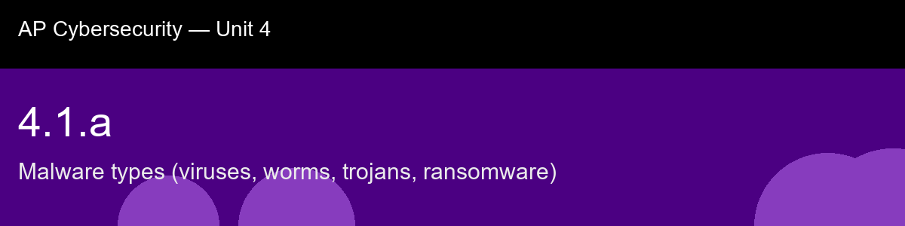

4.1.a, Malware types (viruses, worms, trojans, ransomware)
Before class today. The word "malware" is a contraction of malicious software: any program intentionally designed
to cause harm, steal data, disrupt operations, or give an attacker unauthorized control. Malware
is not a single thing, it is a family of distinct weapon types, each with different mechanics.
The AP framework focuses on four categories that account for the vast majority of real-world
device compromises.
The intuition to hold onto: Before you memorize four malware names, notice the one question that sorts all of them: does this thing need a human to help it move, or does it move on its own? A virus and a trojan both need you, you open the infected file, you install the fake app. A worm needs nobody; it finds the next machine itself. That single fork explains why the defenses look so different: user education stops the first group, network segmentation stops the second, and no amount of "don't click suspicious links" training will slow down a worm that never asked you to click anything.
A myth worth busting before we start: "Antivirus software catches all malware." → Signature-based tools miss new variants; behavioral detection helps but zero-day malware can evade it. Defense-in-depth (backups, patching, user awareness) is essential.
Today's goal: Identify the four major malware categories, viruses, worms, trojans, and ransomware, describe how each spreads and causes harm, and classify a described infection by its behavioral signature.
Handout: pre-lecture-handout.docx.

## 4.1.a, Malware types (viruses, worms, trojans, ransomware)
**Before class today.** The word "malware" is a contraction of *malicious software*: any program intentionally designed
to cause harm, steal data, disrupt operations, or give an attacker unauthorized control. Malware
is not a single thing, it is a family of distinct weapon types, each with different mechanics.
The AP framework focuses on four categories that account for the vast majority of real-world
device compromises.
**The intuition to hold onto:** Before you memorize four malware names, notice the one question that sorts all of them: does this thing need a human to help it move, or does it move on its own? A virus and a trojan both need you, you open the infected file, you install the fake app. A worm needs nobody; it finds the next machine itself. That single fork explains why the defenses look so different: user education stops the first group, network segmentation stops the second, and no amount of "don't click suspicious links" training will slow down a worm that never asked you to click anything.
**A myth worth busting before we start:** "Antivirus software catches all malware." → Signature-based tools miss new variants; behavioral detection helps but zero-day malware can evade it. Defense-in-depth (backups, patching, user awareness) is essential.
**Today's goal:** Identify the four major malware categories, viruses, worms, trojans, and ransomware, describe how each spreads and causes harm, and classify a described infection by its behavioral signature.
Handout: `pre-lecture-handout.docx`.